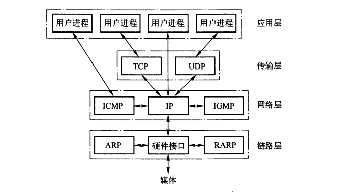
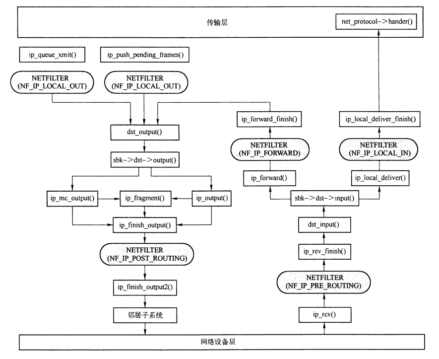
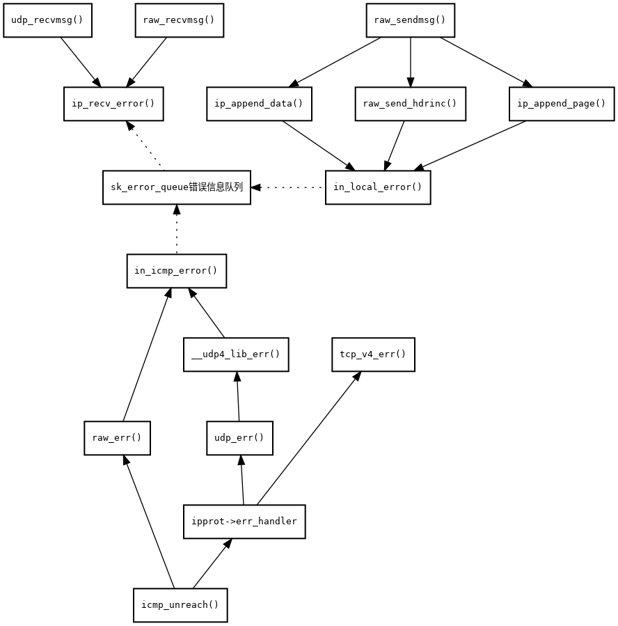
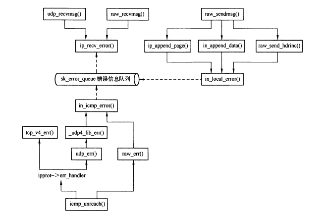
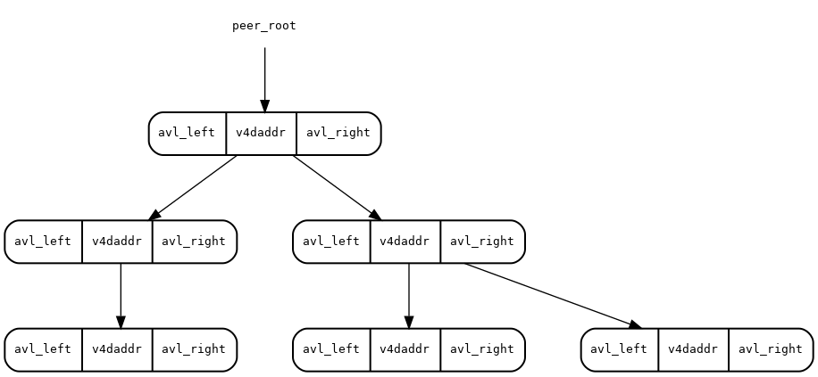
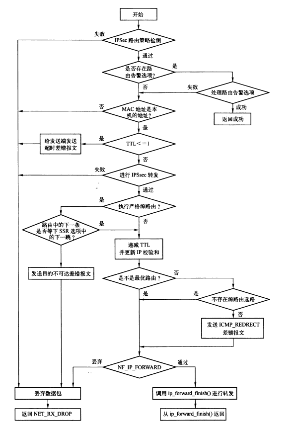
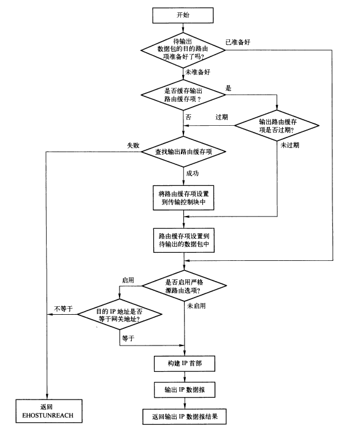
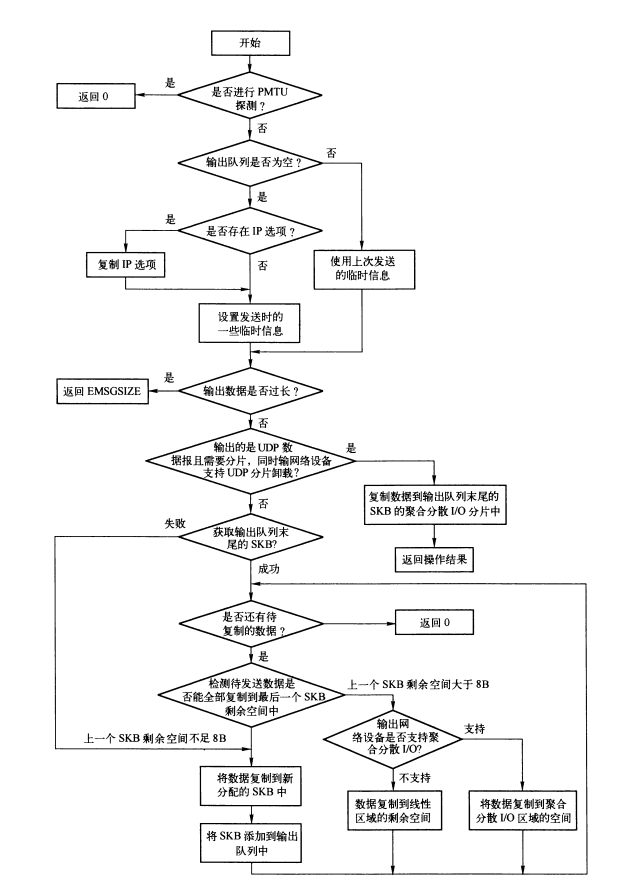

IP: 网际协议
Table of Contents
1 引言
IP是TCP/IP协议族中的最为核心的协议，TCP UDP ICMP 和 IGMP都是以IP数据报的形式传输。

Figure 1: IPv4协议族中不同层次的协议
1.1 IP数据报的输入与输出
在输入数据时，网络层提供输入接口给链路层，并调用传输层输入接口将数据传递到传输层。
输出数据时，网络层提供输出接口给传输层，并调用链路层输出接口将数据输出到链路层。
在输入输出过程中，都需要查找路由，进行netfilter处理，下图展示了IP层主要函数的调用关系：

Figure 2: IP层主要函数的调用关系
2 IP的私有信息控制块
IP层在SKB中有个 inet_skb_param 结构的信息控制块 skb_buff->cb 。IP层通过宏 IPCB 访问该成员。这个信息块主要存储IP选项，以及IP处理中需要设置的标志。
struct inet_skb_parm { struct ip_options opt; /* IP选项 */ unsigned char flags; #define IPSKB_FORWARDED 1 //组播包已经转发过 #define IPSKB_XFRM_TUNNEL_SIZE 2 // #define IPSKB_XFRM_TRANSFORMED 4 // #define IPSKB_FRAG_COMPLETE 8 //完成分片 #define IPSKB_REROUTED 16 // }; #define IPCB(skb) ((struct inet_skb_parm*)((skb)->cb))
3 系统参数
- ip_default_ttl IP数据报的默认生存时间。 可以通过IP_TTL设置数据报的生存时间。
- ip_dynaddr
- ip_forwarded 标识内核是否转发IP数据报
- ip_local_port_range 在自动选择绑定端口时，TCP和UDP使用本地端口的范围。
- ip_no_pmtu_disc 路径MTU
- forwarding 标识网络设备是否启用ip数据报转发功能
- mc_forwarding 是否启用组播路由功能
- accept_redirects 是否接受ICMP重定向消息
- rp_filter 标识是否对数据包的源地址进行检查
- send_redirects 是否可以发送重定向消息
- accept_source_route 是否接收存储在源路由选项的IP数据报
- log_martians 遇到错误的IP地址时，是否记录到内核日志
- disable_xfrm 是否禁止IPSEC加密
- disable_policy 是否禁止IPSEC策略
- promote_secondaries 在删除主地址时，第二IP地址是否能升级为主IP地址。
4 初始化 inet_init()
5 IP层套接口选项
- IP_OPTIONS 用来设置或者获取数据报的IP选项，最长40字节。可能的选项包括：
- 安全控制限制
- 记录路由
- 时间戳
- 松散源路由选择 访问路径中包含选项内列出的IP地址
- 严格源路由选择 只能访问选项内列出的IP地址
- IP_PKTINFO 控制是否允许通过IP_PKTOPTIONS选项或recvmsg系统调用来获取和本端地址相关的IP_PKTOPTIONS选项。
- IP_RECVTTL 控制是否允许通过IP_PKTOPTIONS选项或recvmsg系统调用获取数据报的TTL
- IP_RECVTOS 是否可以获取数据报的TOS
- IP_RECVOPTS 是否可以获取IP数据包首部的IP选项
- IP_RETOPTS 类似与IP_RECVOPTS, 不同的是获取为处理时间戳选项和记录路由选项的IP选项
- IP_PASSSEC 是否可以获取有关安全的信息
- IP_TOS 设置或者获取数据报的服务类型
- IP_TTL 设置数据报的生存时间
- IP_HDRINCL 为1时，发送函数会将IP首部作为数据的一部分包含在发送数据的前部，并使得接收函数也将IP首部作为数据的一部分
- IP_MTU_DISCOVER 套接口是否启用路径MTU发现
- IP_RECVERR 是否允许接收扩展的可靠错误信息，用户可通过设置了 MSG_ERRQUEUE 标识的 recvmsg() 来接收套接口操作中接收到的错误信息
- IP_MTU 获取当前套接口的当前已知路径MTU。
- IP_ROUTER_ALERT IP路由器警告选项
- IP_PKTOPTIONS 设置了 IP_PKTINFO 或者 IP_RECVTTL 选项后，可通过此选项获取相关信息
- IP_FREEBIND 用于标识是否允许绑定非本地主机地址
- IP_IPSEC_POLICY 和 IP_XFRM_POLICY 用来设置IPSEC相关策略。
6 ipv4_devconf结构
ipv4_devconf结构是网络设备接口的IPv4系统配置。 内核定义了一个 ipv4_devconf 全局变量，用于所有接口的配置，同时，设备内部也存在自身的一份配置。
struct ipv4_devconf { int accept_redirects; //是否接收ICMP重定向报文 int send_redirects; //是否启用ICMP重定向报文输出 int secure_redirects; //是否接收ICMP重定向报文，只针对具有路由功能的网关 int shared_media; int accept_source_route; //是否接收带有SRR选项的数据报 int rp_filter; //是否启用通过反向路径回溯进行源地址验证 int proxy_arp; //是否启用ARP代理 int bootp_relay; //是否接收源地址为 0.b.c.d 且目的地址非本机的数据报 int log_martians; //是否巨鹿非法地址的数据报到内核日志 int forwarding; //是否启用ip数据报转发功能 int mc_forwarding; //是否进行组播路由 int tag; int arp_filter; //允许从其他的网络设备输出ARP应答 int arp_announce; //输出ARP请求时，由IP数据报确定源IP地址的规则 int arp_ignore; //接收ARP请求报文的过滤规则 int arp_accept; //是否处理非ARP请求而接收的ARP应答 int medium_id; //用于区分不同媒介 int no_xfrm; //是否启用XFRM int no_policy; //是否启用策略路由 int force_igmp_version; int promote_secondaries; //在删除主地址时，第二IP地址是否能升级为主IP地址 void *sysctl; // };
7 套接口的错误队列
传输控制块中有一个用于保存错误信息的队列 sk_err_queue，当ICMP接收到差错信息或者UDP RAW套接口输出报文错误时，会产生描述错误信息的SKB并添加到该队列。 应用程序可以通过设置 IP_RECVERR 选项，在通过设置了MSG_ERRQUEUE参数的flag，调用recvmsg系统调用来获取错误信息。
UDP和RAW套接口使用recvmsg从套接口接收数据时，通过设置MSG_ERRQUEUE标志，之接收错误队列的信息。 这个功能主要通过 ip_recv_error() 来完成。


对于基于连接的套接口，IP_RECVERR选项具有不同含义，错误信息不会保存到错误队列，而是立即传递所有接收到的错误信息给用户进程。 因此TCP没有错误队列。
错误信息通过 struct sock_exterr_skb 结构来定义，保存在SKB控制块中，通过 SKB_EXT_ERR 宏来访问SKB控制块中的错误信息。
struct sock_exterr_skb { union { struct inet_skb_parm h4; struct inet6_skb_parm h6; } header;//与IP控制块兼容，可以存储IP选项信息 struct sock_extended_err ee; //记录出错信息 u16 addr_offset; //原始数据包的目的地址在负载ICMP报文的IP数据报中的偏移量 __be16 port; //对于UDP是出错报文的目的端口，其他情况为0 }; struct sock_extended_err { __u32 ee_errno; //错误码 __u8 ee_origin; //出错信息的来源 __u8 ee_type; //来自ICMP消息时，表示ICMP差错消息的类型 __u8 ee_code; //来自ICMP消息时，表示ICMP差错消息的编码 __u8 ee_pad; __u32 ee_info;//扩展信息 __u32 ee_data; };
7.1 添加ICMP差错信息
ICMP模块收到ICMP差错信息时，调用原始数据包的传输层协议的差错处理例程，传输层的差错处理例程再调用 ip_icmp_error() 将出错信息添加到对应的错误队列。
void ip_icmp_error(struct sock *sk, struct sk_buff *skb, int err, __be16 port, u32 info, u8 *payload) { struct inet_sock *inet = inet_sk(sk); struct sock_exterr_skb *serr; if (!inet->recverr) return; skb = skb_clone(skb, GFP_ATOMIC); if (!skb) return; serr = SKB_EXT_ERR(skb); serr->ee.ee_errno = err; serr->ee.ee_origin = SO_EE_ORIGIN_ICMP; //出错信息来自ICMP消息 serr->ee.ee_type = skb->h.icmph->type; serr->ee.ee_code = skb->h.icmph->code; serr->ee.ee_pad = 0; serr->ee.ee_info = info; serr->ee.ee_data = 0; serr->addr_offset = (u8*)&(((struct iphdr*)(skb->h.icmph+1))->daddr) - skb->nh.raw; serr->port = port; skb->h.raw = payload; if (!skb_pull(skb, payload - skb->data) || sock_queue_err_skb(sk, skb)) //添加到错误队列，并唤醒对应进程 kfree_skb(skb); }
7.2 添加由本地产生的差错信息
UDP 或者 RAW 发送数据时，如果数据长度超过IP数据包能负载的长度，会调用ip_local_error() 将出错信息添加到对应的错误队列。
void ip_local_error(struct sock *sk, int err, __be32 daddr, __be16 port, u32 info) { struct inet_sock *inet = inet_sk(sk); struct sock_exterr_skb *serr; struct iphdr *iph; struct sk_buff *skb; if (!inet->recverr) return; skb = alloc_skb(sizeof(struct iphdr), GFP_ATOMIC); if (!skb) return; iph = (struct iphdr*)skb_put(skb, sizeof(struct iphdr)); skb->nh.iph = iph; iph->daddr = daddr; serr = SKB_EXT_ERR(skb); serr->ee.ee_errno = err; serr->ee.ee_origin = SO_EE_ORIGIN_LOCAL; //来自本地 serr->ee.ee_type = 0; serr->ee.ee_code = 0; serr->ee.ee_pad = 0; serr->ee.ee_info = info; serr->ee.ee_data = 0; serr->addr_offset = (u8*)&iph->daddr - skb->nh.raw; serr->port = port; skb->h.raw = skb->tail; __skb_pull(skb, skb->tail - skb->data); if (sock_queue_err_skb(sk, skb)) //添加到错误队列，并唤醒对应进程 kfree_skb(skb); }
7.3 读取错误信息
通过将flags设置为 MSG_ERRQUEUE，调用recvmsg()来读取传输控制块错误队列的信息。 UDP和RAW的recvmsg实现中，先检测是否存在MSG_ERRQUEUE标识，之后调用 ip_recv_error() 从错误队列读取错误信息。
int udp_recvmsg(struct kiocb *iocb, struct sock *sk, struct msghdr *msg, size_t len, int noblock, int flags, int *addr_len) { //...... if (flags & MSG_ERRQUEUE) return ip_recv_error(sk, msg, len); //...... } static int raw_recvmsg(struct kiocb *iocb, struct sock *sk, struct msghdr *msg, size_t len, int noblock, int flags, int *addr_len) { //...... if (flags & MSG_ERRQUEUE) { err = ip_recv_error(sk, msg, len); goto out; } }
int ip_recv_error(struct sock *sk, struct msghdr *msg, int len) { struct sock_exterr_skb *serr; struct sk_buff *skb, *skb2; struct sockaddr_in *sin; struct { struct sock_extended_err ee; struct sockaddr_in offender; } errhdr; int err; int copied; err = -EAGAIN; skb = skb_dequeue(&sk->sk_error_queue); if (skb == NULL) //队列没有错误信息 goto out; copied = skb->len; //每次获取数据报的长度 if (copied > len) { //如果超过缓冲区长度，添加MSG_TRUNC标识 msg->msg_flags |= MSG_TRUNC; copied = len; } //将数据报的数据复制到缓存中 err = skb_copy_datagram_iovec(skb, 0, msg->msg_iov, copied); if (err) goto out_free_skb; sock_recv_timestamp(msg, sk, skb); //记录时间戳 serr = SKB_EXT_ERR(skb); sin = (struct sockaddr_in *)msg->msg_name; if (sin) { //复制原始数据报的目的地址和目的端口 sin->sin_family = AF_INET; sin->sin_addr.s_addr = *(__be32*)(skb->nh.raw + serr->addr_offset); sin->sin_port = serr->port; memset(&sin->sin_zero, 0, sizeof(sin->sin_zero)); } //复制错误信息块的内容 memcpy(&errhdr.ee, &serr->ee, sizeof(struct sock_extended_err)); sin = &errhdr.offender; sin->sin_family = AF_UNSPEC; if (serr->ee.ee_origin == SO_EE_ORIGIN_ICMP) { //来自ICMP的差错消息 struct inet_sock *inet = inet_sk(sk); sin->sin_family = AF_INET; sin->sin_addr.s_addr = skb->nh.iph->saddr; //获取源地址 sin->sin_port = 0; memset(&sin->sin_zero, 0, sizeof(sin->sin_zero)); if (inet->cmsg_flags)//需要获取报文控制信息 ip_cmsg_recv(msg, skb); //复制报文控制信息到消息头 } //复制错误信息的扩展信息 put_cmsg(msg, SOL_IP, IP_RECVERR, sizeof(errhdr), &errhdr); //设置MSG_ERRQUEUE标识，表示接收到的是出错信息 msg->msg_flags |= MSG_ERRQUEUE; err = copied; spin_lock_bh(&sk->sk_error_queue.lock); sk->sk_err = 0; if ((skb2 = skb_peek(&sk->sk_error_queue)) != NULL) { //队列不为空，唤醒等待该传输控制块的进程 sk->sk_err = SKB_EXT_ERR(skb2)->ee.ee_errno; spin_unlock_bh(&sk->sk_error_queue.lock); sk->sk_error_report(sk); } else spin_unlock_bh(&sk->sk_error_queue.lock); out_free_skb: kfree_skb(skb); out: return err; }
8 报文控制信息
设置 IP_PKTINFO 选项的UDP或者RAW套接口，可以通过recvmsg函数在接收数据的同时，获取报文的控制信息。
UDP或者RAW在通过sendmsg函数输出数据时，可以将报文控制信息复制到输出数据的消息头，来发送控制信息。
8.1 IP控制信息块
IP控制信息块由ipcm_cookie结构来描述。
struct ipcm_cookie { //UDP或者RAW数据报的目的地址，只有存在IP选项时才设置，用作源路由选项的最后一跳地址 __be32 addr; int oif; //UDP或者RAW数据报的输出网络设备 struct ip_options *opt; //指向发送数据报的IP选项信息 };
8.2 报文控制信息的输出
UDP或者RAW通过sendmsg输出数据时，先检测是否存在控制信息，存在则调用ip_cmsg_send() 将控制信息获取到IP控制信息块中。
int udp_sendmsg(struct kiocb *iocb, struct sock *sk, struct msghdr *msg, size_t len) { //.... if (msg->msg_controllen) { err = ip_cmsg_send(msg, &ipc); } static int raw_sendmsg(struct kiocb *iocb, struct sock *sk, struct msghdr *msg, size_t len) { //...... if (msg->msg_controllen) { err = ip_cmsg_send(msg, &ipc); }
int ip_cmsg_send(struct msghdr *msg, struct ipcm_cookie *ipc) { int err; struct cmsghdr *cmsg; //遍历消息头中的各种类型的控制信息 for (cmsg = CMSG_FIRSTHDR(msg); cmsg; cmsg = CMSG_NXTHDR(msg, cmsg)) { if (!CMSG_OK(msg, cmsg)) //检测控制信息长度 return -EINVAL; if (cmsg->cmsg_level != SOL_IP) //输出数据报的控制信息，级别必须为SOL_IP continue; switch (cmsg->cmsg_type) { case IP_RETOPTS: //处理IP选项 err = cmsg->cmsg_len - CMSG_ALIGN(sizeof(struct cmsghdr)); err = ip_options_get(&ipc->opt, CMSG_DATA(cmsg), err < 40 ? err : 40); if (err) return err; break; case IP_PKTINFO: { struct in_pktinfo *info; if (cmsg->cmsg_len != CMSG_LEN(sizeof(struct in_pktinfo))) return -EINVAL; info = (struct in_pktinfo *)CMSG_DATA(cmsg); ipc->oif = info->ipi_ifindex; ipc->addr = info->ipi_spec_dst.s_addr; break; } default: return -EINVAL; } } return 0; }
8.3 报文控制信息的输入
UDP和RAW的套接口设置了IP_PKTINFO报文控制信息的选项后，在调用recvmsg时，会调用ip_cmsg_recv()获取报文的控制信息（正常数据和错误信息都会获取）。
void ip_cmsg_recv(struct msghdr *msg, struct sk_buff *skb) { struct inet_sock *inet = inet_sk(skb->sk); unsigned flags = inet->cmsg_flags; /* 以下顺序按使用频率排序 */ if (flags & 1) //设置了IP_CMSG_PKTINFO选项 ip_cmsg_recv_pktinfo(msg, skb); if ((flags>>=1) == 0) return; if (flags & 1) //ttl ip_cmsg_recv_ttl(msg, skb); if ((flags>>=1) == 0) return; if (flags & 1) //tos ip_cmsg_recv_tos(msg, skb); if ((flags>>=1) == 0) return; if (flags & 1) //IP_CMSG_RECVOPTS ip_cmsg_recv_opts(msg, skb); if ((flags>>=1) == 0) return; if (flags & 1) //IP_CMSG_RETOPTS ip_cmsg_recv_retopts(msg, skb); if ((flags>>=1) == 0) return; if (flags & 1) //IP_CMSG_PASSSEC ip_cmsg_recv_security(msg, skb); }
9 对端信息块
对端信息块用来保存对端的一些信息，包括对端地址、传输层时间戳….. 通过 struct inet_peer 结构来描述。
对端信息块主要用于在组装IP数据报时防止IP分片攻击，在建立TCP连接时检测连接请求段是否有效，以及序号是否回绕。
对端信息块以v4daddr为关键字，peer_root为根，组织成AVL树。

struct inet_peer { /* avl_left,avl_right,v4daddr用于组成AVL树 */ struct inet_peer *avl_left, *avl_right; __be32 v4daddr; /* 对端IP地址 */ __u16 avl_height; __u16 ip_id_count; /* 下一个IP分片数据报的id域 */ struct inet_peer *unused_next, **unused_prevp; //用来连接到inet_peer_unused_head链表，该链表的对端信息块都是闲置的，可以回收 __u32 dtime; /* the time of last use of not * referenced entries */ atomic_t refcnt; //引用计数 atomic_t rid; /* 对端发送分片的计数器 */ __u32 tcp_ts; //TCP中最后一个ACK段到达的时间 unsigned long tcp_ts_stamp; //TCP中记录收到段中的时间戳 };
9.1 系统参数
- inet_peer_gc_maxtime 垃圾回收的最大时间间隔。
- inet_peer_gc_mintime 垃圾回收最小时间间隔
- inet_peer_maxttl 对端信息块的最长生存周期
- inet_peer_minttl 对端信息块的最短生存周期
- inet_peer_threshold 用于计算垃圾回收最大时间间隔以及生存期的阈值
9.2 对端信息块的创建和查找
inet_getpeer()函数用来实现创建和查找操作。
struct inet_peer *inet_getpeer(__be32 daddr, int create) { struct inet_peer *p, *n; struct inet_peer **stack[PEER_MAXDEPTH], ***stackptr; /* 从AVL树查找 */ read_lock_bh(&peer_pool_lock); p = lookup(daddr); if (p != peer_avl_empty) atomic_inc(&p->refcnt); read_unlock_bh(&peer_pool_lock); if (p != peer_avl_empty) { //AVL树中存在对端信息块 /* 从未使用链表中移除该对端信息块*/ unlink_from_unused(p); return p; } if (!create) //没有指定创建标志 return NULL; /* 分配空间 */ n = kmem_cache_alloc(peer_cachep, GFP_ATOMIC); n->v4daddr = daddr; atomic_set(&n->refcnt, 1); atomic_set(&n->rid, 0); n->ip_id_count = secure_ip_id(daddr); n->tcp_ts_stamp = 0; write_lock_bh(&peer_pool_lock); /* 获取索后再次检查是否已经添加同样的对端信息块 */ p = lookup(daddr); if (p != peer_avl_empty) //已经存在 goto out_free; /*添加到AVL树*/ link_to_pool(n); n->unused_prevp = NULL; /* not on the list */ peer_total++; write_unlock_bh(&peer_pool_lock); if (peer_total >= inet_peer_threshold) //是否超过阈值 /* 释放 inet_peer_unused_head 队首的对端信息块 */ cleanup_once(0); return n; out_free: /* The appropriate node is already in the pool. */ atomic_inc(&p->refcnt); write_unlock_bh(&peer_pool_lock); /* Remove the entry from unused list if it was there. */ unlink_from_unused(p); /* Free preallocated the preallocated node. */ kmem_cache_free(peer_cachep, n); return p; }
9.3 对端信息块的删除
inet_putpeer()函数用来将对端信息块添加到 inet_peer_unused_head 队列。真正的释放操作，通过垃圾回收机制来处理
void inet_putpeer(struct inet_peer *p) { spin_lock_bh(&inet_peer_unused_lock); if (atomic_dec_and_test(&p->refcnt)) { p->unused_prevp = inet_peer_unused_tailp; p->unused_next = NULL; *inet_peer_unused_tailp = p; inet_peer_unused_tailp = &p->unused_next; p->dtime = (__u32)jiffies; } spin_unlock_bh(&inet_peer_unused_lock); }
9.4 垃圾回收
垃圾回收方式有两种，同步和异步。
同步： 创建时发现当前对端信息块总数达到阈值（inet_peer_threshold）触发回收。 异步： 定时器触发。
9.4.1 对端信息块的释放
对端信息块闲置时，会被加入 inet_peer_threshold 队列，并记录闲置时间，在清理时，如果时间达到阈值，则过期。使用中的对端信息块不会过期。
cleanup_once()用来检测 inet_peer_threshold 队列的第一个闲置对端信息块是否过期，过期则将其释放。
static int cleanup_once(unsigned long ttl) //ttl表示过期阈值 { struct inet_peer *p; spin_lock_bh(&inet_peer_unused_lock); p = inet_peer_unused_head; if (p != NULL) { //队列不为空 __u32 delta = (__u32)jiffies - p->dtime; if (delta < ttl) { //没有过期 spin_unlock_bh(&inet_peer_unused_lock); return -1; } inet_peer_unused_head = p->unused_next; if (p->unused_next != NULL) p->unused_next->unused_prevp = p->unused_prevp; else inet_peer_unused_tailp = p->unused_prevp; p->unused_prevp = NULL; atomic_inc(&p->refcnt); } spin_unlock_bh(&inet_peer_unused_lock); if (p == NULL) //没有可以释放的对端信息块 return -1; unlink_from_pool(p); //从AVL树删除并释放 return 0; }
9.4.2 同步清理
创建时，如果对端信息块达到阈值，则调用cleanup_once()清理，参数ttl设置为0，表示必须释放一个。
struct inet_peer *inet_getpeer(__be32 daddr, int create) { if (peer_total >= inet_peer_threshold) /* 参数0 表示必须释放一个*/ cleanup_once(0);
9.4.3 异步清理
通过peer_periodic_timer定时器进行周期性的垃圾回收，该定时器处理例程为 peer_check_expire()。
peer_periodic_timer 定时器的初始间隔在 inet_initpeers 函数中设置，后续则动态计算。
static DEFINE_TIMER(peer_periodic_timer, peer_check_expire, 0, 0); /* Called with local BH disabled. */ static void peer_check_expire(unsigned long dummy) { unsigned long now = jiffies; int ttl; if (peer_total >= inet_peer_threshold)//超出阈值 ttl = inet_peer_minttl; //ttl使用最小生存期 else ttl = inet_peer_maxttl - (inet_peer_maxttl - inet_peer_minttl) / HZ * peer_total / inet_peer_threshold * HZ; while (!cleanup_once(ttl)) { //循环检测清理 if (jiffies != now) break; } //计算定时器的下次激活时间 if (peer_total >= inet_peer_threshold) peer_periodic_timer.expires = jiffies + inet_peer_gc_mintime; else peer_periodic_timer.expires = jiffies + inet_peer_gc_maxtime - (inet_peer_gc_maxtime - inet_peer_gc_mintime) / HZ * peer_total / inet_peer_threshold * HZ; add_timer(&peer_periodic_timer); //添加定时器。 }
10 IP数据包的输入处理
ip数据包的接收例程定义：
static struct packet_type ip_packet_type = { .type = __constant_htons(ETH_P_IP), .func = ip_rcv, .gso_send_check = inet_gso_send_check, .gso_segment = inet_gso_segment, };
网络初始化时，通过 dev_add_pack() 注册到 ptype_base 散列表。
ip_rcv() 处理完成后经过 PRE-ROUTING 的netfilter后， 交给ip_rcv_finish()处理， ip_rcv_finish()中根据路由信息，决定是转发（ip_forward()），还是输入到本机（ip_local_deliver()）。
10.1 ip_rcv()
网络设备接收到报文时，根据协议号从ptype_base散列表中查找对应的接收例程。
int ip_rcv(struct sk_buff *skb, struct net_device *dev, struct packet_type *pt, struct net_device *orig_dev) { struct iphdr *iph; u32 len; //丢弃去往其他主机的数据报 if (skb->pkt_type == PACKET_OTHERHOST) goto drop; IP_INC_STATS_BH(IPSTATS_MIB_INRECEIVES); //如果是共享数据报，则需要复制一个 if ((skb = skb_share_check(skb, GFP_ATOMIC)) == NULL) { IP_INC_STATS_BH(IPSTATS_MIB_INDISCARDS); goto out; } //检测数据报长度不能小于IP首部 if (!pskb_may_pull(skb, sizeof(struct iphdr))) goto inhdr_error; iph = skb->nh.iph; //IP header //检测IP首部长度和版本 if (iph->ihl < 5 || iph->version != 4) goto inhdr_error; //根据首部携带的长度检测ip数据报长度 if (!pskb_may_pull(skb, iph->ihl*4)) goto inhdr_error; iph = skb->nh.iph; if (unlikely(ip_fast_csum((u8 *)iph, iph->ihl)))//检测校验和 goto inhdr_error; len = ntohs(iph->tot_len);//检测ip数据报总长度 if (skb->len < len || len < (iph->ihl*4)) goto inhdr_error; //根据IP首部中的数据总长度设置SKB的长度 if (pskb_trim_rcsum(skb, len)) { IP_INC_STATS_BH(IPSTATS_MIB_INDISCARDS); goto drop; } /* 清空SKB的ip控制块 */ memset(IPCB(skb), 0, sizeof(struct inet_skb_parm)); //调用NF_IP_PRE_ROUTING netfilter，之后通过ip_rcv_finish()完成输入 return NF_HOOK(PF_INET, NF_IP_PRE_ROUTING, skb, dev, NULL, ip_rcv_finish); inhdr_error: IP_INC_STATS_BH(IPSTATS_MIB_INHDRERRORS); drop: kfree_skb(skb); out: return NET_RX_DROP; }
10.2 ip_rcv_finish()
ip_rcv()结束时，经过neifilter处理后，调用ip_rcv_finish()。
ip_rcv_finish() 主要是调用 ip_route_input() 查找输入路由缓存，接着处理IP数据报首部的选项，最后根据路由缓存输入本地或者转发。
static inline int ip_rcv_finish(struct sk_buff *skb) { struct iphdr *iph = skb->nh.iph; if (skb->dst == NULL) { //还没有路由缓存 //查找路由缓存 int err = ip_route_input(skb, iph->daddr, iph->saddr, iph->tos, skb->dev); if (unlikely(err)) { //查找失败，则丢弃 if (err == -EHOSTUNREACH) IP_INC_STATS_BH(IPSTATS_MIB_INADDRERRORS); goto drop; } } #ifdef CONFIG_NET_CLS_ROUTE //路由表的classifier标签相关 if (unlikely(skb->dst->tclassid)) { struct ip_rt_acct *st = ip_rt_acct + 256*smp_processor_id(); u32 idx = skb->dst->tclassid; st[idx&0xFF].o_packets++; st[idx&0xFF].o_bytes+=skb->len; st[(idx>>16)&0xFF].i_packets++; st[(idx>>16)&0xFF].i_bytes+=skb->len; } #endif //判断是否存在ip选项，并调用ip_rcv_options处理选项 if (iph->ihl > 5 && ip_rcv_options(skb)) goto drop; return dst_input(skb); //如果输入本地，则调用ip_local_deliver()，转发则调用ip_forward() drop: kfree_skb(skb); return NET_RX_DROP; }
10.3 IP数据报输入到本地
10.3.1 ip_local_deliver()
此函数处理输入到本地的数据报。
- 如果是分片，则分片重组
- 非分片，或者重组完成，则调用NF_IP_LOCAL_IN netfilter，之后通过ip_local_deliver_finish() 完成到本地的输入。
/* * Deliver IP Packets to the higher protocol layers. */ int ip_local_deliver(struct sk_buff *skb) { //首先决定是否需要分片重组 if (skb->nh.iph->frag_off & htons(IP_MF|IP_OFFSET)) { skb = ip_defrag(skb, IP_DEFRAG_LOCAL_DELIVER); if (!skb) //还未重组完成 return 0; } return NF_HOOK(PF_INET, NF_IP_LOCAL_IN, skb, skb->dev, NULL, ip_local_deliver_finish); }
10.3.2 ip_local_deliver_finish()
此函数将数据报从网络层传递到传输层。
- 首先去掉IP首部。
- 如果有对应RAW套接口，则需复制一份数据报输入到该套接口。
- 调用传输层接收例程，将数据报交给传输层处理。
static inline int ip_local_deliver_finish(struct sk_buff *skb) { int ihl = skb->nh.iph->ihl*4; __skb_pull(skb, ihl); //去除IP首部 /* Point into the IP datagram, just past the header. */ skb->h.raw = skb->data; rcu_read_lock(); { int protocol = skb->nh.iph->protocol; //传输层协议 int hash; struct sock *raw_sk; struct net_protocol *ipprot; resubmit: hash = protocol & (MAX_INET_PROTOS - 1); //计算hash值 //首先查找raw_v4_htable，决定是否需要输入到raw套接口 raw_sk = sk_head(&raw_v4_htable[hash]); //如果找到raw套接口，则输入到raw if (raw_sk && !raw_v4_input(skb, skb->nh.iph, hash)) raw_sk = NULL; //查找 inet_protos数组，获取相关传输层协议接收例程 if ((ipprot = rcu_dereference(inet_protos[hash])) != NULL) { int ret; if (!ipprot->no_policy) { if (!xfrm4_policy_check(NULL, XFRM_POLICY_IN, skb)) { kfree_skb(skb); goto out; } nf_reset(skb); } ret = ipprot->handler(skb); //输入到传输层 if (ret < 0) { protocol = -ret; goto resubmit; } IP_INC_STATS_BH(IPSTATS_MIB_INDELIVERS); } else {//未找到，则需要发送icmp 目的不可达报文 if (!raw_sk) { if (xfrm4_policy_check(NULL, XFRM_POLICY_IN, skb)) { IP_INC_STATS_BH(IPSTATS_MIB_INUNKNOWNPROTOS); icmp_send(skb, ICMP_DEST_UNREACH, ICMP_PROT_UNREACH, 0); } } else IP_INC_STATS_BH(IPSTATS_MIB_INDELIVERS); kfree_skb(skb); } } out: rcu_read_unlock(); return 0; }
10.4 IP数据报的转发

Figure 6: ip_forward()流程图
int ip_forward(struct sk_buff *skb) { struct iphdr *iph; /* Our header */ struct rtable *rt; /* Route we use */ struct ip_options * opt = &(IPCB(skb)->opt); //查找IPsec策略数据库 if (!xfrm4_policy_check(NULL, XFRM_POLICY_FWD, skb)) goto drop; //存在路由警告选项，调用ip_call_ra_chain将数据报输入到感兴趣的进程 if (IPCB(skb)->opt.router_alert && ip_call_ra_chain(skb)) return NET_RX_SUCCESS; //mac地址是否为接收网络设备的mac地址 if (skb->pkt_type != PACKET_HOST) goto drop; skb->ip_summed = CHECKSUM_NONE; if (skb->nh.iph->ttl <= 1) //如果ttl为1或者小于1,则丢弃 goto too_many_hops; //IPSec路由选路及转发处理 if (!xfrm4_route_forward(skb)) goto drop; rt = (struct rtable*)skb->dst; //数据报启用了严格源路由选项，且数据报的下一跳不是网关 if (opt->is_strictroute && rt->rt_dst != rt->rt_gateway) goto sr_failed; /* 确保SKB有制定长度的headroom空间 */ if (skb_cow(skb, LL_RESERVED_SPACE(rt->u.dst.dev)+rt->u.dst.header_len)) goto drop; iph = skb->nh.iph; /* 递减ttl*/ ip_decrease_ttl(iph); //输出路由中存在重定向标志，则需要发送重定向ICMP报文 if (rt->rt_flags&RTCF_DOREDIRECT && !opt->srr) ip_rt_send_redirect(skb); skb->priority = rt_tos2priority(iph->tos); //netfilter NF_IP_FORWARD操作后，调用 ip_forward_finish return NF_HOOK(PF_INET, NF_IP_FORWARD, skb, skb->dev, rt->u.dst.dev, ip_forward_finish); sr_failed: /* * Strict routing permits no gatewaying */ icmp_send(skb, ICMP_DEST_UNREACH, ICMP_SR_FAILED, 0); goto drop; too_many_hops: /* Tell the sender its packet died... */ IP_INC_STATS_BH(IPSTATS_MIB_INHDRERRORS); icmp_send(skb, ICMP_TIME_EXCEEDED, ICMP_EXC_TTL, 0); drop: kfree_skb(skb); return NET_RX_DROP; }
static inline int ip_forward_finish(struct sk_buff *skb) { struct ip_options * opt = &(IPCB(skb)->opt); IP_INC_STATS_BH(IPSTATS_MIB_OUTFORWDATAGRAMS); if (unlikely(opt->optlen)) ip_forward_options(skb); //处理IP数据报选项 return dst_output(skb); //输出数据报 }
11 IP数据报的输入处理
11.1 IP数据报输出到设备
转发数据报和本地输出的数据报，都需要经过路由之后，输出到设备，输出到设备的接口为 ip_output()。
ip_output并不会直接调用，而是通过输出数据报的目的路由缓存项中的输出接口调用。
本地输出的数据报查找到目的路由缓存后，通过NF_IP_LOCAL_OUT的netfilter处理，通过dst_output输出到网络设备。
转发的数据报查找路由后，通过NF_IP_FORWARD的netfilter处理后，通过dst_output输出到设备。
11.1.1 dst_output()
/* Output packet to network from transport. */ static inline int dst_output(struct sk_buff *skb) { //调用目的路由缓存的输出接口 return skb->dst->output(skb); }
11.1.2 ip_output()
对于单播数据报，目的路由缓存项中的输出接口output为ip_output()。
int ip_output(struct sk_buff *skb) { struct net_device *dev = skb->dst->dev; IP_INC_STATS(IPSTATS_MIB_OUTREQUESTS); skb->dev = dev; //设置输出网络设备 skb->protocol = htons(ETH_P_IP); //网络层协议类型 //调用netfilter的 NF_IP_POST_ROUTING,之后通过 ip_finish_output处理 return NF_HOOK_COND(PF_INET, NF_IP_POST_ROUTING, skb, NULL, dev, ip_finish_output, !(IPCB(skb)->flags & IPSKB_REROUTED)); }
11.1.3 ip_finish_output()
static inline int ip_finish_output(struct sk_buff *skb) { #if defined(CONFIG_NETFILTER) && defined(CONFIG_XFRM) /* Policy lookup after SNAT yielded a new policy */ if (skb->dst->xfrm != NULL) { IPCB(skb)->flags |= IPSKB_REROUTED; return dst_output(skb); } #endif //大于MTU，则需要分片 if (skb->len > dst_mtu(skb->dst) && !skb_is_gso(skb)) return ip_fragment(skb, ip_finish_output2); else return ip_finish_output2(skb); //输出 }
11.1.4 ip_finish_output2()
该函数通过邻居子系统将数据报输出到网络设备。
static inline int ip_finish_output2(struct sk_buff *skb) { struct dst_entry *dst = skb->dst; struct net_device *dev = dst->dev; int hh_len = LL_RESERVED_SPACE(dev); /* 检测skb前面的空间能否存储链路层首部 */ if (unlikely(skb_headroom(skb) < hh_len && dev->hard_header)) { struct sk_buff *skb2; //需要分配更大存储区的SKB skb2 = skb_realloc_headroom(skb, LL_RESERVED_SPACE(dev)); if (skb2 == NULL) { kfree_skb(skb); return -ENOMEM; } if (skb->sk) skb_set_owner_w(skb2, skb->sk); kfree_skb(skb); skb = skb2; } //缓存了链路层首部，直接输出 if (dst->hh) return neigh_hh_output(dst->hh, skb); else if (dst->neighbour) //存在邻居项，通过邻居项的方法输出 return dst->neighbour->output(skb); //没有链路层首部，也没有邻居项，则需要丢弃 if (net_ratelimit()) printk(KERN_DEBUG "ip_finish_output2: No header cache and no neighbour!\n"); kfree_skb(skb); return -EINVAL; }
11.2 TCP输出的相关接口
TCP中有几种输出接口，常用的输出接口为 ip_queue_xmit()。 ip_build_and_send_pkt()和ip_send_reply()只有发送特定段时才会调用。
11.2.1 ip_queue_xmit()

Figure 7: ip_queue_xmit()流程图
/* skb: 待封装为ip数据报的TCP段 ipfragok： 标识数据是否已经完成分片 */ int ip_queue_xmit(struct sk_buff *skb, int ipfragok) { struct sock *sk = skb->sk; struct inet_sock *inet = inet_sk(sk); struct ip_options *opt = inet->opt; struct rtable *rt; struct iphdr *iph; /* 如果已经准备好路由缓存，则无需在查找路由 */ rt = (struct rtable *) skb->dst; if (rt != NULL) goto packet_routed; rt = (struct rtable *)__sk_dst_check(sk, 0); //查看该数据报的传输控制块是否已经缓存了输出路由，并检查是否过期 if (rt == NULL) { __be32 daddr; //查找路由 daddr = inet->daddr; if(opt && opt->srr) daddr = opt->faddr; { struct flowi fl = { .oif = sk->sk_bound_dev_if, .nl_u = { .ip4_u = { .daddr = daddr, .saddr = inet->saddr, .tos = RT_CONN_FLAGS(sk) } }, .proto = sk->sk_protocol, .uli_u = { .ports = { .sport = inet->sport, .dport = inet->dport } } }; security_sk_classify_flow(sk, &fl); if (ip_route_output_flow(&rt, &fl, sk, 0))/* 如果查找失败，传输层的重传机制会保持重试，直到查到路由或者连接超时*/ goto no_route; } sk_setup_caps(sk, &rt->u.dst); } //查找到路由 skb->dst = dst_clone(&rt->u.dst); packet_routed: //如果存在严格路由选项，且下一跳地址和网关不同，则丢弃 if (opt && opt->is_strictroute && rt->rt_dst != rt->rt_gateway) goto no_route; /* 开始设置IP首部，有选项则构建IP选项 */ iph = (struct iphdr *) skb_push(skb, sizeof(struct iphdr) + (opt ? opt->optlen : 0)); *((__be16 *)iph) = htons((4 << 12) | (5 << 8) | (inet->tos & 0xff)); iph->tot_len = htons(skb->len); if (ip_dont_fragment(sk, &rt->u.dst) && !ipfragok) iph->frag_off = htons(IP_DF); else iph->frag_off = 0; iph->ttl = ip_select_ttl(inet, &rt->u.dst); iph->protocol = sk->sk_protocol; iph->saddr = rt->rt_src; iph->daddr = rt->rt_dst; skb->nh.iph = iph; /* Transport layer set skb->h.foo itself. */ if (opt && opt->optlen) { iph->ihl += opt->optlen >> 2; ip_options_build(skb, opt, inet->daddr, rt, 0); } ip_select_ident_more(iph, &rt->u.dst, sk, (skb_shinfo(skb)->gso_segs ?: 1) - 1); /* 添加IP校验和 */ ip_send_check(iph); skb->priority = sk->sk_priority; //调用netfilter的NF_IP_LOCAL_OUT后，通过dst_output输出 return NF_HOOK(PF_INET, NF_IP_LOCAL_OUT, skb, NULL, rt->u.dst.dev, dst_output); no_route: IP_INC_STATS(IPSTATS_MIB_OUTNOROUTES); kfree_skb(skb); return -EHOSTUNREACH; }
11.2.2 ip_build_and_send_pkt()
该函数用于在TCP建立连接过程中，打包输出SYN+ACK类型的TCP段。
int ip_build_and_send_pkt(struct sk_buff *skb, struct sock *sk, __be32 saddr, __be32 daddr, struct ip_options *opt) { struct inet_sock *inet = inet_sk(sk); struct rtable *rt = (struct rtable *)skb->dst; struct iphdr *iph; /* 构建IP首部 */ if (opt) iph=(struct iphdr *)skb_push(skb,sizeof(struct iphdr) + opt->optlen); else iph=(struct iphdr *)skb_push(skb,sizeof(struct iphdr)); iph->version = 4; //版本 iph->ihl = 5; //首部长度 iph->tos = inet->tos; //tos if (ip_dont_fragment(sk, &rt->u.dst))//是否指定了不分片 iph->frag_off = htons(IP_DF); else iph->frag_off = 0; iph->ttl = ip_select_ttl(inet, &rt->u.dst); iph->daddr = rt->rt_dst; iph->saddr = rt->rt_src; iph->protocol = sk->sk_protocol; iph->tot_len = htons(skb->len); //设置ip数据报的id, 如果不分片，则使用套接口的id, 否则使用对端信息块的ip_id_count成员 ip_select_ident(iph, &rt->u.dst, sk); skb->nh.iph = iph; if (opt && opt->optlen) {//处理IP选项 iph->ihl += opt->optlen>>2; ip_options_build(skb, opt, daddr, rt, 0); } ip_send_check(iph); //计算IP数据报的校验和 skb->priority = sk->sk_priority; /* 调用netfilter的NF_IP_LOCAL_OUT, 之后通过dst_output输出 */ return NF_HOOK(PF_INET, NF_IP_LOCAL_OUT, skb, NULL, rt->u.dst.dev, dst_output); }
11.2.3 ip_send_reply()
该函数用于构造RST和ACK段，并输出。分别在 tcp_v4_send_reset() 和 tcp_v4_send_ack() 中调用。
struct ip_reply_arg { struct kvec iov[1]; //标识待输出数据的位置及长度 __wsum csum; //TCP伪首部校验和 int csumoffset; /* Tcp首部中的校验和字段在首部中的偏移*/ }; /* * Generic function to send a packet as reply to another packet. * Used to send TCP resets so far. ICMP should use this function too. * * Should run single threaded per socket because it uses the sock * structure to pass arguments. * * LATER: switch from ip_build_xmit to ip_append_* */ void ip_send_reply(struct sock *sk, struct sk_buff *skb, struct ip_reply_arg *arg, unsigned int len) { struct inet_sock *inet = inet_sk(sk); struct { struct ip_options opt; char data[40]; } replyopts; struct ipcm_cookie ipc; __be32 daddr; struct rtable *rt = (struct rtable*)skb->dst; if (ip_options_echo(&replyopts.opt, skb))//获取选项 return; //根据SKB的输入路由，获取对端IP地址 daddr = ipc.addr = rt->rt_src; ipc.opt = NULL; if (replyopts.opt.optlen) { ipc.opt = &replyopts.opt; if (ipc.opt->srr) //启用了源路由选项 daddr = replyopts.opt.faddr; //将下一跳ip地址作为目的地址 } {//查找路由 struct flowi fl = { .nl_u = { .ip4_u = { .daddr = daddr, .saddr = rt->rt_spec_dst, .tos = RT_TOS(skb->nh.iph->tos) } }, /* Not quite clean, but right. */ .uli_u = { .ports = { .sport = skb->h.th->dest, .dport = skb->h.th->source } }, .proto = sk->sk_protocol }; security_skb_classify_flow(skb, &fl); if (ip_route_output_key(&rt, &fl)) return; } bh_lock_sock(sk); inet->tos = skb->nh.iph->tos; sk->sk_priority = skb->priority; sk->sk_protocol = skb->nh.iph->protocol; ip_append_data(sk, ip_reply_glue_bits, arg->iov->iov_base, len, 0, &ipc, rt, MSG_DONTWAIT); //添加数据 if ((skb = skb_peek(&sk->sk_write_queue)) != NULL) { //队列不为空 if (arg->csumoffset >= 0) *((__sum16 *)skb->h.raw + arg->csumoffset) = csum_fold(csum_add(skb->csum, arg->csum)); skb->ip_summed = CHECKSUM_NONE; ip_push_pending_frames(sk); //发送数据 } bh_unlock_sock(sk); ip_rt_put(rt); }
11.3 UDP输出接口
11.3.1 ip_append_data()
ip_append_data()函数主要用于 UDP 和 RAW 套接口，tcp中发送ACK和RST时，也会调用该函数。
ip_append_data()用于将大的数据包分成多个不大于MTU的SKB，为网络层的分片做准备。
- 如果先前的输出队列非空，则先向队列最后一个SKB填充
- 如果网络设备支持聚合分散I/O，则将数据写到frags指向的页面，如果页面填满，则再次分配页面。
- 进入下次循环，分配SKB，通过getfrag从传输层复制数据，并添加到输出队列的末尾。

Figure 8: ip_append_data()流程图
int ip_append_data(struct sock *sk, int getfrag(void *from, char *to, int offset, int len, int odd, struct sk_buff *skb), void *from, int length, int transhdrlen, struct ipcm_cookie *ipc, struct rtable *rt, unsigned int flags);
| 参数 | 描述 |
|---|---|
| sk | 数据的传输控制块 |
| getfrag | 用于复制数据到SKB,不同传输层的复制方法也不同 |
| from | 输出数据的的数据块地址，指向内核空间或者用户空间 |
| length | 数据长度 |
| transhdrlen | 传输层首部长度 |
| ipc | 传递到IP层的临时信息块 |
| rt | 路由缓存项 |
| flags | 输出数据的标志 |
int getfrag(void *from, char *to, int offset, int len, int odd, struct sk_buff *skb);
| 参数 | 描述 |
|---|---|
| from | 待复制数据 |
| to | 将要复制到的位置 |
| offset | 待复制数据的偏移 |
| len | 复制长度 |
| odd | 从上一个SKB中剩余下来并复制到此SKB的长度 |
| skb | 数据的SKB |
| getfrag | 描述 |
|---|---|
| ip_generic_getfrag | 用于复制UDP或者RAW的数据 |
| udplite_getfrag | 用于复制轻量级UDP的数据 |
| ip_reply_glue_bits | 用于在TCP中复制RST和ACK段的数据 |
| icmp_glue_bits | 用于复制ICMP报文 |
/* * ip_append_data() and ip_append_page() can make one large IP datagram * from many pieces of data. Each pieces will be holded on the socket * until ip_push_pending_frames() is called. Each piece can be a page * or non-page data. * * Not only UDP, other transport protocols - e.g. raw sockets - can use * this interface potentially. * * LATER: length must be adjusted by pad at tail, when it is required. */ int ip_append_data(struct sock *sk, int getfrag(void *from, char *to, int offset, int len, int odd, struct sk_buff *skb), void *from, int length, int transhdrlen, struct ipcm_cookie *ipc, struct rtable *rt, unsigned int flags) { struct inet_sock *inet = inet_sk(sk); struct sk_buff *skb; struct ip_options *opt = NULL; int hh_len; int exthdrlen; //用于记录IPsec中的扩展首部的长度 int mtu; int copy; int err; int offset = 0; unsigned int maxfraglen, fragheaderlen; int csummode = CHECKSUM_NONE; if (flags&MSG_PROBE) //此标识代表进行路径MTU探测，不会传递数据 return 0; //传输控制块的输出队列为空 if (skb_queue_empty(&sk->sk_write_queue)) { opt = ipc->opt; if (opt) { //存在ip选项，则需要将选项复制到临时信息块 if (inet->cork.opt == NULL) { inet->cork.opt = kmalloc(sizeof(struct ip_options) + 40, sk->sk_allocation); if (unlikely(inet->cork.opt == NULL)) return -ENOBUFS; } memcpy(inet->cork.opt, opt, sizeof(struct ip_options)+opt->optlen); inet->cork.flags |= IPCORK_OPT; //标识临时信息块中存在IP选项 inet->cork.addr = ipc->addr; } dst_hold(&rt->u.dst); inet->cork.fragsize = mtu = dst_mtu(rt->u.dst.path); //分片大小 inet->cork.rt = rt; //路由 inet->cork.length = 0; sk->sk_sndmsg_page = NULL; sk->sk_sndmsg_off = 0; if ((exthdrlen = rt->u.dst.header_len) != 0) { length += exthdrlen; transhdrlen += exthdrlen; } } else { //输出队列不为空 rt = inet->cork.rt; //使用上次的路由 if (inet->cork.flags & IPCORK_OPT) opt = inet->cork.opt; transhdrlen = 0; exthdrlen = 0; mtu = inet->cork.fragsize; } hh_len = LL_RESERVED_SPACE(rt->u.dst.dev);//链路层首部长度 fragheaderlen = sizeof(struct iphdr) + (opt ? opt->optlen : 0); //IP首部长度需要4字节对齐 maxfraglen = ((mtu - fragheaderlen) & ~7) + fragheaderlen; //输出的数据报长度大于一个IP数据报能容纳的长度，返回EMSGSIZE出错消息 if (inet->cork.length + length > 0xFFFF - fragheaderlen) { ip_local_error(sk, EMSGSIZE, rt->rt_dst, inet->dport, mtu-exthdrlen); return -EMSGSIZE; } if (transhdrlen && //大于0,说明是首片数据 length + fragheaderlen <= mtu && rt->u.dst.dev->features & NETIF_F_ALL_CSUM && //网络设备支持校验和 !exthdrlen) csummode = CHECKSUM_PARTIAL; inet->cork.length += length; if (((length > mtu) && (sk->sk_protocol == IPPROTO_UDP)) &&//UDP数据报并且需要分片 (rt->u.dst.dev->features & NETIF_F_UFO)) {//网络设备支持UDP分片卸载 //ip_ufo_append_data()进行分片处理 err = ip_ufo_append_data(sk, getfrag, from, length, hh_len, fragheaderlen, transhdrlen, mtu, flags); if (err) goto error; return 0; } /* So, what's going on in the loop below? * * We use calculated fragment length to generate chained skb, * each of segments is IP fragment ready for sending to network after * adding appropriate IP header. */ //队列末尾的SKB为空，则需要分配 if ((skb = skb_peek_tail(&sk->sk_write_queue)) == NULL) goto alloc_new_skb; //开始循环处理数据 while (length > 0) { /* Check if the remaining data fits into current packet. */ copy = mtu - skb->len; //最后一个SKB的剩余空间能否容纳所有数据 if (copy < length) copy = maxfraglen - skb->len; if (copy <= 0) { //小于0,说明上一个SKB不能填充，需重新分配 //将数据复制到新分配的SKB中 char *data; unsigned int datalen; unsigned int fraglen; unsigned int fraggap; unsigned int alloclen; struct sk_buff *skb_prev; alloc_new_skb: skb_prev = skb; if (skb_prev) /*如果上一个SKB中存在多余8字节对齐的MTU数据， 则将这些数据移动到当前SKB,以确保最后一个IP分 片之外的数据能够4字节对齐。因此要计算移动到当 前SKB的的数据长度 */ fraggap = skb_prev->len - maxfraglen; else fraggap = 0; /* * If remaining data exceeds the mtu, * we know we need more fragment(s). */ /*剩余数据超过MTU,则需要更多的分片*/ //计算需要复制到新SKB的长度 datalen = length + fraggap; //数据长度无法放在一个MTU中，重新计算长度 if (datalen > mtu - fragheaderlen) datalen = maxfraglen - fragheaderlen; //计算三层首部和数据的总长度 fraglen = datalen + fragheaderlen; if ((flags & MSG_MORE) && //后续还有数据输出 !(rt->u.dst.dev->features&NETIF_F_SG)) //设备不支持聚合分散I/O alloclen = mtu;//将mtu作为skb的分配长度 else//按数据长度分配SKB alloclen = datalen + fragheaderlen; /* The last fragment gets additional space at tail. * Note, with MSG_MORE we overallocate on fragments, * because we have no idea what fragment will be * the last. */ if (datalen == length + fraggap)//最后一个分片 alloclen += rt->u.dst.trailer_len; //如果目的路由启用IPSec,则需要增加对应的分配空间 if (transhdrlen) { //存在传输层首部，说明是分组的首个分片 //需要考虑输出超时，传输层是否错误等情况 skb = sock_alloc_send_skb(sk, alloclen + hh_len + 15, (flags & MSG_DONTWAIT), &err); } else {//不是首个分片 skb = NULL; if (atomic_read(&sk->sk_wmem_alloc) <= 2 * sk->sk_sndbuf) skb = sock_wmalloc(sk, alloclen + hh_len + 15, 1, sk->sk_allocation); if (unlikely(skb == NULL)) err = -ENOBUFS; } if (skb == NULL) goto error; /* * Fill in the control structures *///填充用于校验的控制信息 skb->ip_summed = csummode; skb->csum = 0; skb_reserve(skb, hh_len); /* * Find where to start putting bytes. */ //预留用于存放二层首部、三层首部和数据的空间，并设置SKB的指向三层、四层的指针 data = skb_put(skb, fraglen); skb->nh.raw = data + exthdrlen; data += fragheaderlen; skb->h.raw = data + exthdrlen; if (fraggap) { //说明上一个SKB的数据超过8字节对齐MTU //将数据和传输层首部复制到当前SKB skb->csum = skb_copy_and_csum_bits( skb_prev, maxfraglen, data + transhdrlen, fraggap, 0); skb_prev->csum = csum_sub(skb_prev->csum, skb->csum); data += fraggap; pskb_trim_unique(skb_prev, maxfraglen); } //接着复制剩下的数据 copy = datalen - transhdrlen - fraggap; if (copy > 0 && getfrag(from, data + transhdrlen, offset, copy, fraggap, skb) < 0) { err = -EFAULT; kfree_skb(skb); goto error; } /*完成本次数据的复制*/ offset += copy; //下一次复制数据的偏移 length -= datalen - fraggap; //剩余数据长度 transhdrlen = 0; exthdrlen = 0; csummode = CHECKSUM_NONE; /* * Put the packet on the pending queue. */ //将SKB添加至输出队列 __skb_queue_tail(&sk->sk_write_queue, skb); continue; } if (copy > length) //上个SKB剩余空间大于剩余的待发送数据，则可以直接复制 copy = length; if (!(rt->u.dst.dev->features&NETIF_F_SG)) { //设备不支持聚合分散I/O unsigned int off; //复制数据到SKB的线性区 off = skb->len; if (getfrag(from, skb_put(skb, copy), offset, copy, off, skb) < 0) { __skb_trim(skb, off); err = -EFAULT; goto error; } } else { //支持聚合分散I/O，则复制到聚合分散I/O区域 int i = skb_shinfo(skb)->nr_frags; //获取分片数组的最后分片 skb_frag_t *frag = &skb_shinfo(skb)->frags[i-1]; struct page *page = sk->sk_sndmsg_page; int off = sk->sk_sndmsg_off; //已使用数据的结束位置偏移 unsigned int left; //page中存在剩余空间 if (page && (left = PAGE_SIZE - off) > 0) { if (copy >= left) //待复制数据大于剩余空间 copy = left; //传输控制块的缓存页不是最后一个聚合分散I/O的页面 if (page != frag->page) { if (i == MAX_SKB_FRAGS) {//聚合分散I/O数据还没有满 err = -EMSGSIZE; goto error; } //直接使用传输控制块的缓存页 get_page(page); //将缓存页添加至聚合分散I/O页数组中 skb_fill_page_desc(skb, i, page, sk->sk_sndmsg_off, 0); frag = &skb_shinfo(skb)->frags[i]; } } else if (i < MAX_SKB_FRAGS) { //聚合分散I/O页数组没有达到上限 if (copy > PAGE_SIZE) copy = PAGE_SIZE; //分配页面 page = alloc_pages(sk->sk_allocation, 0); if (page == NULL) { err = -ENOMEM; goto error; } sk->sk_sndmsg_page = page; sk->sk_sndmsg_off = 0; //添加到聚合分散I/O页面数组 skb_fill_page_desc(skb, i, page, 0, 0); frag = &skb_shinfo(skb)->frags[i]; skb->truesize += PAGE_SIZE; //更新缓存大小 atomic_add(PAGE_SIZE, &sk->sk_wmem_alloc); } else { err = -EMSGSIZE; goto error; } //将待发送数据复制到指定页面 if (getfrag(from, page_address(frag->page)+frag->page_offset+frag->size, offset, copy, skb->len, skb) < 0) { err = -EFAULT; goto error; } sk->sk_sndmsg_off += copy; frag->size += copy; skb->len += copy; skb->data_len += copy; } offset += copy; length -= copy; } return 0; error: inet->cork.length -= length; IP_INC_STATS(IPSTATS_MIB_OUTDISCARDS); return err; }
11.3.2 ip_ufo_append_data()
该函数将数据复制到输出队列末尾SKB的聚合分散I/O页面中。
static inline int ip_ufo_append_data(struct sock *sk, int getfrag(void *from, char *to, int offset, int len, int odd, struct sk_buff *skb), void *from, int length, int hh_len, int fragheaderlen, int transhdrlen, int mtu,unsigned int flags) { struct sk_buff *skb; int err; /* There is support for UDP fragmentation offload by network * device, so create one single skb packet containing complete * udp datagram */ if ((skb = skb_peek_tail(&sk->sk_write_queue)) == NULL) {//输出队列为空 //分配新的SKB,并在SKB线性区预留链路层、网络层、传输层首部空间。 skb = sock_alloc_send_skb(sk, hh_len + fragheaderlen + transhdrlen + 20, (flags & MSG_DONTWAIT), &err); if (skb == NULL) return err; /* reserve space for Hardware header */ skb_reserve(skb, hh_len); /* create space for UDP/IP header */ skb_put(skb,fragheaderlen + transhdrlen); /* initialize network header pointer */ skb->nh.raw = skb->data; /* initialize protocol header pointer */ skb->h.raw = skb->data + fragheaderlen; //初始化校验相关信息 skb->ip_summed = CHECKSUM_PARTIAL; skb->csum = 0; sk->sk_sndmsg_off = 0; } //将数据复制到聚合分散I/O页面中 err = skb_append_datato_frags(sk,skb, getfrag, from, (length - transhdrlen)); if (!err) { /* specify the length of each IP datagram fragment*/ skb_shinfo(skb)->gso_size = mtu - fragheaderlen; skb_shinfo(skb)->gso_type = SKB_GSO_UDP; __skb_queue_tail(&sk->sk_write_queue, skb); return 0; } /* There is not enough support do UFO , * so follow normal path */ kfree_skb(skb); return err; }
- skb_append_datato_frags()函数用于将数据复制到SKB的聚合分散I/O页面中，直到复制完成或者SKB空间已满。
/** * skb_append_datato_frags: - append the user data to a skb * @sk: sock structure * @skb: skb structure to be appened with user data. * @getfrag: call back function to be used for getting the user data * @from: pointer to user message iov * @length: length of the iov message * * Description: This procedure append the user data in the fragment part * of the skb if any page alloc fails user this procedure returns -ENOMEM */ int skb_append_datato_frags(struct sock *sk, struct sk_buff *skb, int (*getfrag)(void *from, char *to, int offset, int len, int odd, struct sk_buff *skb), void *from, int length) { int frg_cnt = 0; skb_frag_t *frag = NULL; struct page *page = NULL; int copy, left; int offset = 0; int ret; do { /* Return error if we don't have space for new frag */ frg_cnt = skb_shinfo(skb)->nr_frags; //获取当前的frags数组项的数目 if (frg_cnt >= MAX_SKB_FRAGS) return -EFAULT; /* 分配空闲页 */ page = alloc_pages(sk->sk_allocation, 0); if (page == NULL) return -ENOMEM; /* 初始化下一个frag数组项 */ sk->sk_sndmsg_page = page; sk->sk_sndmsg_off = 0; skb_fill_page_desc(skb, frg_cnt, page, 0, 0); skb->truesize += PAGE_SIZE; atomic_add(PAGE_SIZE, &sk->sk_wmem_alloc); /* get the new initialized frag */ frg_cnt = skb_shinfo(skb)->nr_frags; frag = &skb_shinfo(skb)->frags[frg_cnt - 1]; /* copy the user data to page */ left = PAGE_SIZE - frag->page_offset; copy = (length > left)? left : length; //复制数据 ret = getfrag(from, (page_address(frag->page) + frag->page_offset + frag->size), offset, copy, 0, skb); if (ret < 0) return -EFAULT; /* copy was successful so update the size parameters */ sk->sk_sndmsg_off += copy; frag->size += copy; skb->len += copy; skb->data_len += copy; offset += copy; length -= copy; } while (length > 0); return 0; }
11.3.3 ip_push_pending_frames()
该函数将输出队列上的多个分片合成一个完整的IP数据报，并通过ip_output()输出。
/* * Combined all pending IP fragments on the socket as one IP datagram * and push them out. */ int ip_push_pending_frames(struct sock *sk) { struct sk_buff *skb, *tmp_skb; struct sk_buff **tail_skb; struct inet_sock *inet = inet_sk(sk); struct ip_options *opt = NULL; struct rtable *rt = inet->cork.rt; struct iphdr *iph; __be16 df = 0; __u8 ttl; int err = 0; //输出队列为空，无需处理 if ((skb = __skb_dequeue(&sk->sk_write_queue)) == NULL) goto out; tail_skb = &(skb_shinfo(skb)->frag_list); //获取fraglist链表用于存放处理后的分片 /* 校正IP首部位置 */ if (skb->data < skb->nh.raw) __skb_pull(skb, skb->nh.raw - skb->data); //循环处理输出队列的SKB while ((tmp_skb = __skb_dequeue(&sk->sk_write_queue)) != NULL) { __skb_pull(tmp_skb, skb->h.raw - skb->nh.raw); //链接到frag_list链表的末尾 *tail_skb = tmp_skb; tail_skb = &(tmp_skb->next); skb->len += tmp_skb->len; skb->data_len += tmp_skb->len; skb->truesize += tmp_skb->truesize; __sock_put(tmp_skb->sk); tmp_skb->destructor = NULL; tmp_skb->sk = NULL; } /* Unless user demanded real pmtu discovery (IP_PMTUDISC_DO), we allow * to fragment the frame generated here. No matter, what transforms * how transforms change size of the packet, it will come out. */ if (inet->pmtudisc != IP_PMTUDISC_DO)//没有启用路径MTU发现，则可以分片 skb->local_df = 1; /* DF bit is set when we want to see DF on outgoing frames. * If local_df is set too, we still allow to fragment this frame * locally. */ if (inet->pmtudisc == IP_PMTUDISC_DO || //启动路径MTU发现 (skb->len <= dst_mtu(&rt->u.dst) && //数据报长度小于MTU ip_dont_fragment(sk, &rt->u.dst))) //指定了禁止分片标志 df = htons(IP_DF); //禁止分片 if (inet->cork.flags & IPCORK_OPT) //传输控制块中指定了IP选项信息 opt = inet->cork.opt; //ttl if (rt->rt_type == RTN_MULTICAST) ttl = inet->mc_ttl; else ttl = ip_select_ttl(inet, &rt->u.dst); //构建IP首部 iph = (struct iphdr *)skb->data; iph->version = 4; iph->ihl = 5; if (opt) { iph->ihl += opt->optlen>>2; ip_options_build(skb, opt, inet->cork.addr, rt, 0); } iph->tos = inet->tos; iph->tot_len = htons(skb->len); iph->frag_off = df; ip_select_ident(iph, &rt->u.dst, sk); iph->ttl = ttl; iph->protocol = sk->sk_protocol; iph->saddr = rt->rt_src; iph->daddr = rt->rt_dst; ip_send_check(iph); //设置数据报优先级以及目的路由 skb->priority = sk->sk_priority; skb->dst = dst_clone(&rt->u.dst); /* Netfilter gets whole the not fragmented skb. */ err = NF_HOOK(PF_INET, NF_IP_LOCAL_OUT, skb, NULL, skb->dst->dev, dst_output); if (err) { if (err > 0) err = inet->recverr ? net_xmit_errno(err) : 0; if (err) goto error; } out: inet->cork.flags &= ~IPCORK_OPT; kfree(inet->cork.opt); inet->cork.opt = NULL; if (inet->cork.rt) { ip_rt_put(inet->cork.rt); inet->cork.rt = NULL; } return err; error: IP_INC_STATS(IPSTATS_MIB_OUTDISCARDS); goto out; }
12 IP层对GSO的支持
IP层的GSO操作接口只是用来给链路层访问传输层。
12.1 inet_gso_segment()
ip层的gso_segment接口的实现为 inet_gso_segment() 函数，该函数根据数据包获取对应的传输层接口，并完成GSO分段，之后对分段后的数据报重新计算校验和。
static struct sk_buff *inet_gso_segment(struct sk_buff *skb, int features) { struct sk_buff *segs = ERR_PTR(-EINVAL); struct iphdr *iph; struct net_protocol *ops; int proto; int ihl; int id; //校验SKB的gso_type if (unlikely(skb_shinfo(skb)->gso_type & ~(SKB_GSO_TCPV4 | SKB_GSO_UDP | SKB_GSO_DODGY | SKB_GSO_TCP_ECN | 0))) goto out; //SKB数据报长度至少大于IP首部长度 if (unlikely(!pskb_may_pull(skb, sizeof(*iph)))) goto out; iph = skb->nh.iph; ihl = iph->ihl * 4; //校验IP首部中的长度是否有效 if (ihl < sizeof(*iph)) goto out; //根据IP首部中的长度，校验数据包长度 if (unlikely(!pskb_may_pull(skb, ihl))) goto out; skb->h.raw = __skb_pull(skb, ihl); iph = skb->nh.iph; id = ntohs(iph->id); //获取IP首部的id字段 proto = iph->protocol & (MAX_INET_PROTOS - 1); segs = ERR_PTR(-EPROTONOSUPPORT); rcu_read_lock(); //根据IP首部的传输层协议，获取对应的传输层协议接口 ops = rcu_dereference(inet_protos[proto]); if (likely(ops && ops->gso_segment)) segs = ops->gso_segment(skb, features);//进行GSO软分段，所有分段通过skb的next链接 （tcp为tcp_tso_segment()） rcu_read_unlock(); if (!segs || unlikely(IS_ERR(segs))) goto out; skb = segs; do { //循环计算所有分段的IP校验和 iph = skb->nh.iph; iph->id = htons(id++); iph->tot_len = htons(skb->len - skb->mac_len); iph->check = 0; iph->check = ip_fast_csum(skb->nh.raw, iph->ihl); } while ((skb = skb->next)); out: return segs; }
12.2 inet_gso_send_check()
IP层的gso_send_check的接口通过 inet_gso_send_check() 函数实现。
static int inet_gso_send_check(struct sk_buff *skb) { struct iphdr *iph; struct net_protocol *ops; int proto; int ihl; int err = -EINVAL; //至少大于IP首部长度 if (unlikely(!pskb_may_pull(skb, sizeof(*iph)))) goto out; iph = skb->nh.iph; ihl = iph->ihl * 4; if (ihl < sizeof(*iph)) //IP首部长度值是否有效 goto out; //根据IP首部长度校验数据包长度 if (unlikely(!pskb_may_pull(skb, ihl))) goto out; skb->h.raw = __skb_pull(skb, ihl); iph = skb->nh.iph; proto = iph->protocol & (MAX_INET_PROTOS - 1); err = -EPROTONOSUPPORT; rcu_read_lock(); ops = rcu_dereference(inet_protos[proto]); //获取传输层协议接口 if (likely(ops && ops->gso_send_check)) err = ops->gso_send_check(skb); //调用传输层的接口（tcp为 tcp_v4_gso_send_check()） rcu_read_unlock(); out: return err; }